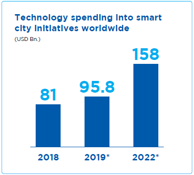

A Smarter Sri Lanka
with SLT


The world is in the middle of a digital revolution. Several factors have come together to spark this revolution: the proliferation of smart devices that can connect to the Internet, advances in cost-effective storage technology, wireless access to high-speed Internet, apps that can use smart devices and the Internet to accomplish or speed up tasks – the only limitation that exists is human imagination.
This has spurred about a “smartening” of virtually every aspect of the lives of people: smart televisions, smart homes, smart lighting, smart voice-activated assistants, smart watches – nothing is left untouched by the digital revolution. Smart cities are emerging, fuelled by data and technology, to create cities that are more efficient and sustainable, bringing about economic development and improved quality of life for inhabitants. There are over 250 smart city projects underway in 178 cities around the world. Emerging countries are modernising their public sectors and transforming how they deliver services to their citizens; India alone has embarked on the ambitious “Smart City Mission” to transform 100 urban areas across the country into “smart cities”. Smart cities require smart governments, and they are rising to take advantage of technology and data and provide better, more convenient lives for their citizens.

Source: Statista
* Projection
What is a smart government?
Smart governments are those that embrace and utilise technology to inform their decision-making and strategies to take more informed courses of action. A smart Government is one that is:
-
Citizen-centric
A smart government understands that its citizens play an important role in the cities and communities they govern, and that they tend to be highly informed. Therefore, a smart government removes the silos that exist between it and its citizens and integrates their input and feedback into its processes. The outcome is an effective user experience for citizens and improved efficiency and results in government-citizen interactions. -
Data-driven
A smart government gathers data from all possible sources – citizens, public workers, sensors, surveys, statistics – and analyses them to derive useful information to make data-driven decisions. -
Performance-focused
A smart government focuses on achieving optimal outcomes for all stakeholders. Effective Key Performance Indicators (KPIs) for a smart government will focus on the outcomes rather than the inputs. -
Long-term
A smart government takes into consideration that the return on investment and realisation of benefits from smart government initiatives will take course over the long term. Management and fiscal planning will have to be plotted out accordingly, beyond election cycles, to fully realise the benefits of a smart government.
Lanka Government Network 2.0
The Lanka Government Network 2.0 (LGN 2.0) is an initiative launched by the Information and Communication Technology Agency of Sri Lanka (ICTA), which functions under the Ministry of Telecommunication and Digital Infrastructure. The strategic project is aligned to the national policy of “Digitisation of the Economy”, wherein the Government of Sri Lanka recognises the need for a digital economy in the country and the role a smart government will play in it in order to face future economic
and social challenges.
A smart government is a connected government. LGN 2.0 will help the Government of Sri Lanka to fulfil its vision of digitising the economy through a dedicated, high-speed, secure, reliable, and centrally managed government network that will tie all government institutions into a singular digital infrastructure. Through LGN 2.0, ICTA aims to usher public sector employees into the digital era and bring about efficiency and the smooth flow of information, thereby improving the standards of service in the public sector and providing citizens with efficient service.
The role of SLT in smart government
SLT is the strategic partner for the infrastructure deployment and solution implementation for LGN 2.0. SLT is perfectly suited for this role due to its role as the national ICT solution provider of the country and its extensive fibre optic network that provides ultra-fast and reliable broadband connectivity.
GOVERNMENT ORGANISATIONS |
860 |
Divisional Secretariats |
331 |
District Secretariats |
25 |
Ministries |
50 |
Departments |
87 |
Hospitals |
46 |
Other Government Organisations |
321 |
The first phase of LGN 2.0 saw SLT having to establish the main Virtual Private Network (VPN) core and connect 860 Government organisations. SLT had to interact and coordinate with an incredible number of stakeholders, including the 860 Government organisations, hospitals, local Government offices, SLT regional offices, SLT solution teams, international vendors, local product suppliers, and dozens of island-wide sub-contractor teams for laying out the fibre network and indoor network implementation.
SLT took on the design and deployment of this challenging project within a tight timeframe and successfully achieved the project objectives, all within six months.
SLT took on the design and deployment of this challenging project within a tight timeframe and successfully achieved the project objectives, all within six months.
LGN 2.0 has effectively removed the physical boundaries that exist between Government institutions and moves the Government closer to its objective of offering effective and efficient services to the public. Citizens in rural areas of the country now have easier and convenient access to Government services, opening up opportunities to them including making it easier to establish businesses, without having to travel long distances and incur costs.
A global Sri Lanka
With Vision 2025, the Government of Sri Lanka envisions the transformation of the country into the hub of the Indian Ocean by building a knowledge-based, highly competitive, social-market economy. The environment of an empowered Sri Lanka will be one where all citizens have the opportunity to achieve higher incomes and better standards of living.
To transform into the hub of the Indian Ocean, SLT has launched initiatives such as the SEA-ME-WE 5 cable station in Matara, the Galle Submarine Cable Depot, and the National Data Centre. The Matara submarine cable landing station, with its capacity to connect the East and West segments of the SEA-ME-5 cable at 24 Tbps each, enables operators to terminate traffic in Sri Lanka, cross-connect with other systems, and enhance their carrying capacity. The Galle Submarine Cable Depot is crucial to maintaining the integrity of the complex submarine cable networks that connect Sri Lanka to the world, greatly reducing service restoration times and increasing service reliability in the Middle East and Asia Pacific region. The National Data Centre takes advantage of SLT’s extensive fibre optic network and global connectivity through the Matara cable station to provide flexible, scalable, and cost-effective data hosting and cloud services to enterprises. Through this trifecta, SLT leaves it mark on the world and establishes Sri Lanka as a key regional player.
SLT ushers in a smarter Sri Lanka
A smarter Sri Lanka, one that embraces digitalisation, is one that will be sustainable and globalised, ensuring that the country and its citizens are prepared for education and employment that are reshaped by digital technologies. SLT, in its capacity as the national ICT service provider, is building the infrastructure and will deliver real-time data analytics and smart solutions to the Government and other stakeholders. SLT Group Vision 2022 has already seen SLT embark on a digital journey, ready for digital Sri Lanka.
The LGN 2.0 project exemplifies how SLT is ready to bring in the digital future in Sri Lanka. SLT is helping to ensure the pieces for a digital economy in Sri Lanka are falling into place through the National Broadband Network and our expertise in planning and executing complex ICT projects, and LGN 2.0 is only the beginning. The future will see SLT develop and implement the digital backbone and smart solutions for Colombo Port City and elevate it to be South-East Asia’s premier smart city.
SLT’s efforts to assist the Government of Sri Lanka build a smarter Sri Lanka go beyond infrastructure and technology.
SLT recognises that citizens of all ages need to be empowered to help build the smart cities of a digital Sri Lanka. SLT aids the country’s vision of building a smart education system by providing the infrastructure and facilities required for the next generation of Sri Lankans to engage in their studies with modern technology and access to the wealth of information and knowledge available through the Internet. Ensuring that senior citizens are not left behind on the country’s digital journey, SLT reaches out to them through workshops that aim to build their ICT skills, thus improving their wellbeing and independence.
SLT empowers the nation’s healthcare system through the eChannelling platform. Connecting over 210 hospitals and 4,500 medical professionals across the island, SLT is bridging the gap between healthcare providers and citizens through an effective, efficient, and user-friendly platform that any user can access via their mobile phones through any network, landline, the eChannelling Mobile App, and over 2,000 agents around the country. Mobitel’s “DengueFreeChild” app takes a grassroots approach in enabling users to monitor and control the spread of dengue in their neighbourhoods.
And SLT is propelling business institutions in the country into the cloud through platforms such as the Entution Enterprise Resourcing Planning solution and the Akaza Cloud platform. Businesses of any size can take advantage of big data analytics and business intelligence solutions to generate insights at half the cost and time of legacy solutions without the upfront investment costs that they would entail. SLT is an enabler for large and small businesses to benefit from the global digital revolution.
SLT continues to build the foundation for a smarter Sri Lanka.
As SLT transitions into a Digital Services Provider, with the aim of becoming the preferred digital lifestyle provider by 2022, we understand the role we play in assisting the Government and the citizens of the country to enter the digital era in a digital Sri Lanka. We are ready to meet all the challenges of a digital tomorrow.